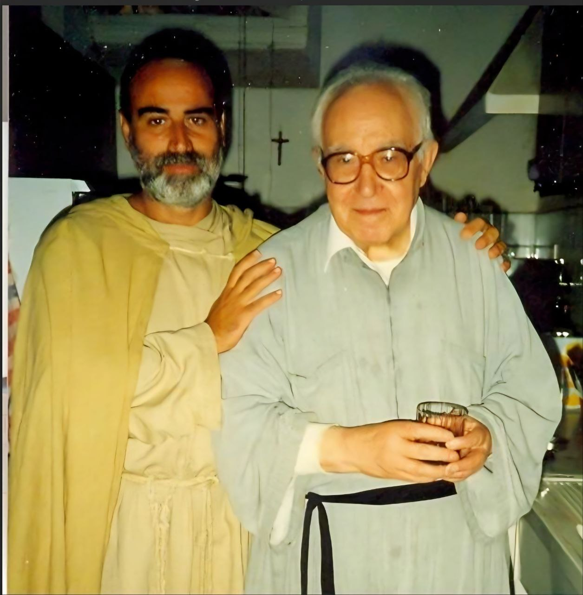
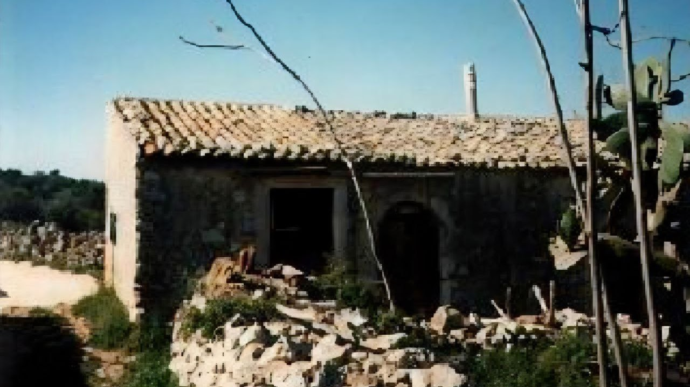
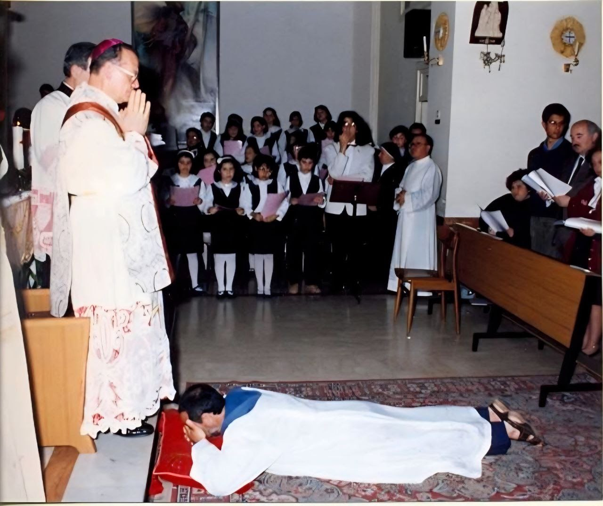
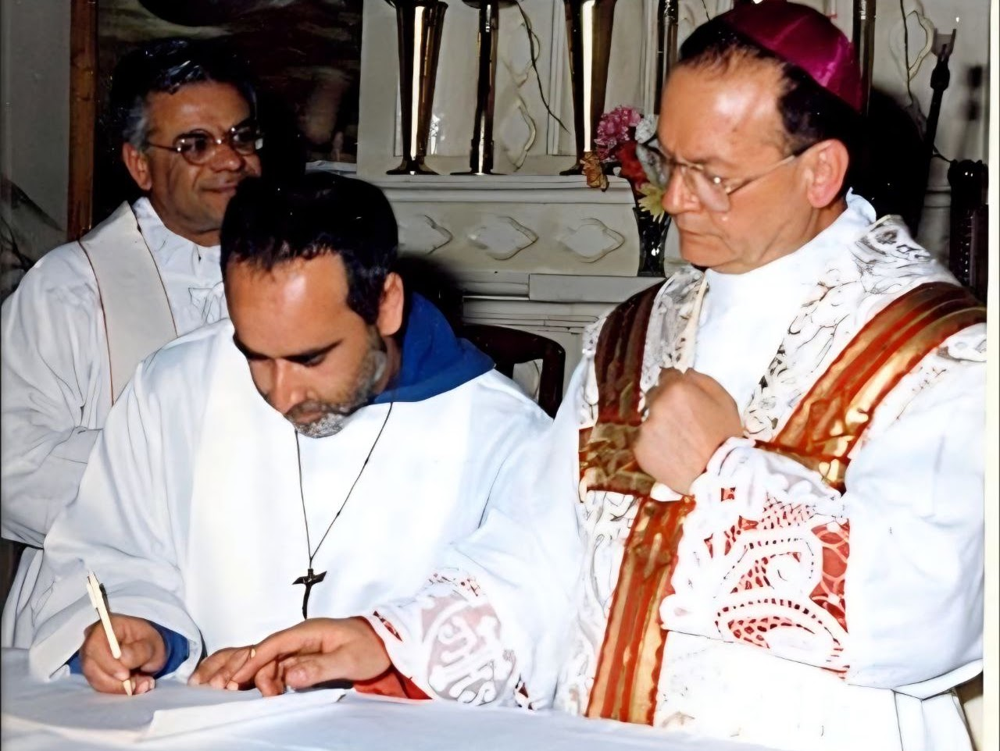
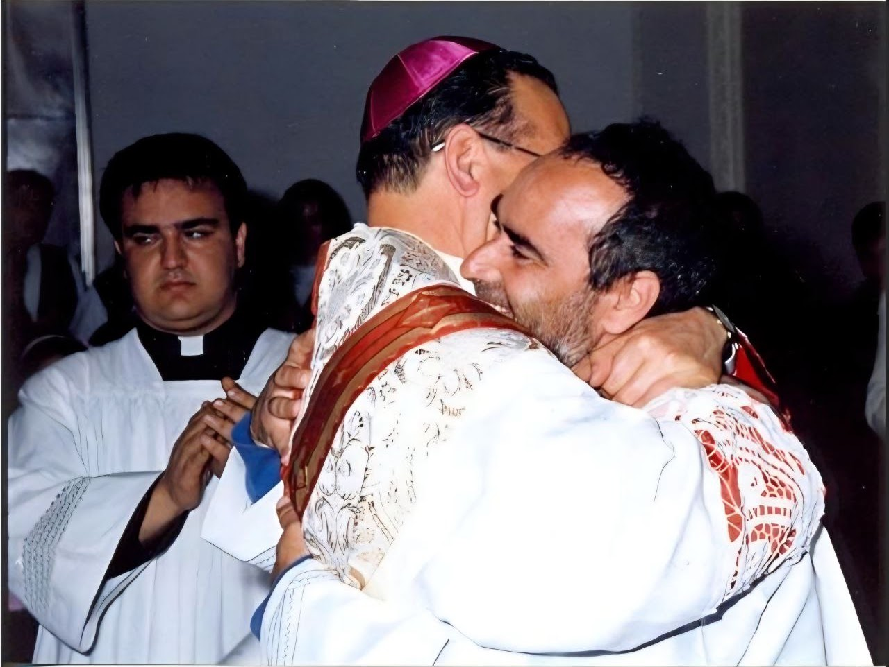
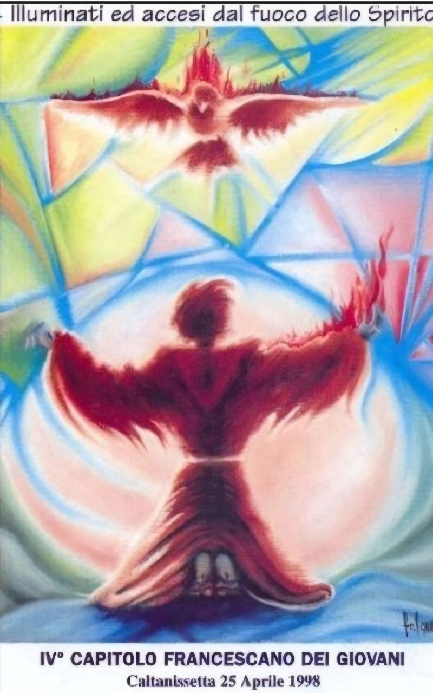
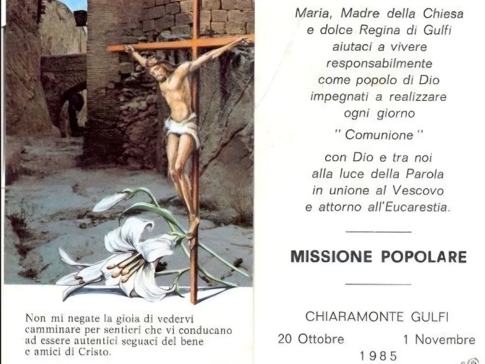
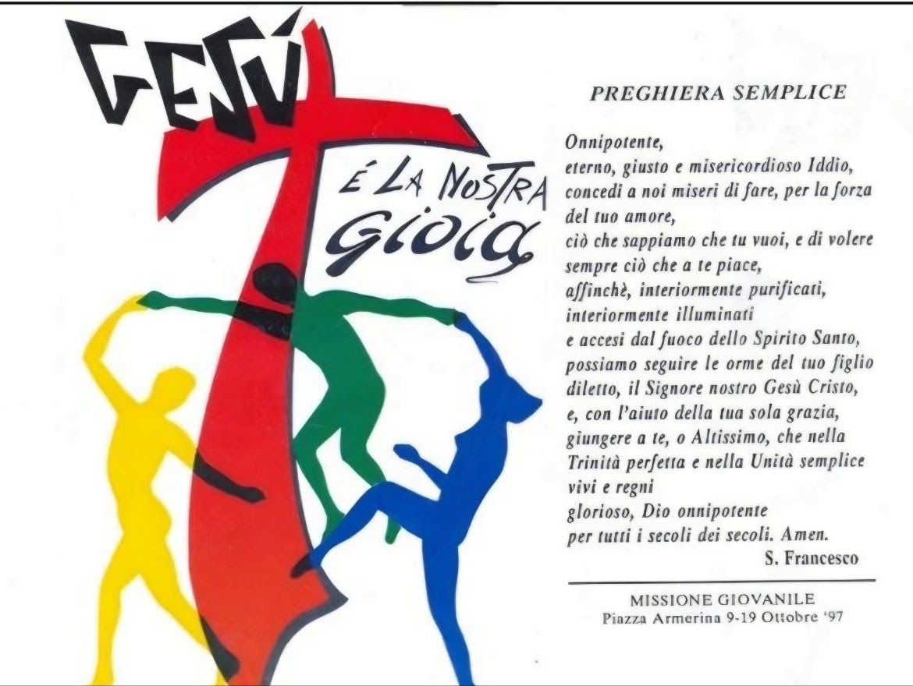
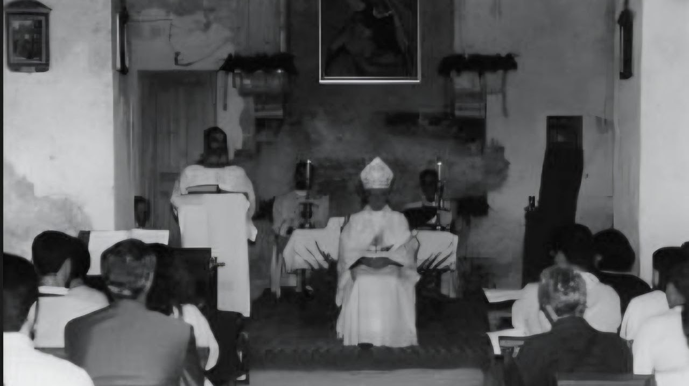
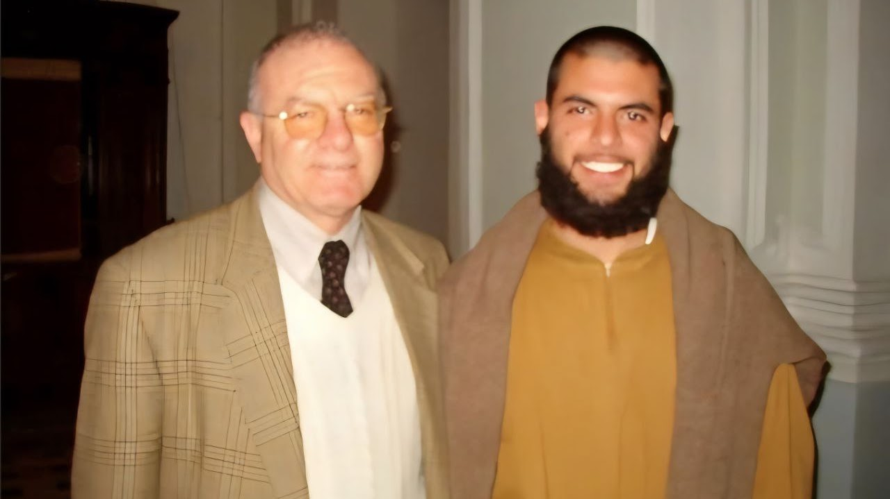

Dalle origini...1986 – 2016
La Fraternità Santa Maria degli Angeli nasce, inizialmente con la denominazione di “Comunità San Damiano”, teoricamente nel 1986, quando il fondatore, fratel Carlo dell’Addolorata, aiutato e stimolato dalla sua guida spirituale, don Divo Barsotti, torna dopo molti anni in Sicilia per mettere nelle mani di Dio il progetto che da anni sente nel cuore: realizzare la comunione fraterna in una comunità di carattere contemplativo ma nel contempo aperta alla predicazione e all’annuncio, sullo stile della vita francescana degli esordi e soprattutto sulle orme del Cristo dei Vangeli.
Comincia però a realizzarsi praticamente nel 1990, dopo un periodo di quasi quattro anni di vita eremitica e solitaria. Il 19 marzo del 1990 un piccolo gruppo di fratelli va a vivere alle porte di Canicattini Bagni, in preghiera e solitudine.


Qualche mese dopo l'Arcivescovo appena eletto dell’Arcidiocesi di Siracusa, viene in visita privata prima e ufficiale dopo, celebrando l’Eucaristia nell’appena edificata chiesetta della Comunità, approva gli Statuti allora semplicissimi e nomina come moderatore e protettore della Fraternità mons. Sebastiano Gozzo. Il 24 aprile del 1992 mons. Costanzo accoglie i voti perpetui e pubblici del fondatore.
Qualche mese prima era stato firmato il decreto di Mons. Nicolosi, Vescovo di Noto, perché la Comunità potesse dipendere dall’Arcidiocesi di Siracusa.
Nel '93 arrivano i primi giovani pronti a servire il Signore secondo la nostra forma di vita: una comunità contemplativa che sente il bisogno di “annunciare” ciò che il Signore dice nel silenzio e nel nascondimento. Cominciano gli interventi nelle parrocchie, le testimonianze. Si forma il primo gruppo di ragazzi di “strada”.


Ad Assisi, nel '95, alcuni di essi cominciano un cammino di aspirantato nella comunità e cominciano a lavorare, pur rimanendo laici, nell’aiuto di altri giovani. Nel settembre del '95 fanno un recital in piazza in cui raccontano la loro esperienza di droga, di alcolismo, di rottura. Lo fanno insieme alle famiglie. Si forma un gruppo famiglie pronto ad accogliere ogni giovane che vorrà cominciare un percorso di “unificazione” con i suoi. Cominciano anche le missioni popolari ai giovani.
Le itineranze (predicazioni lungo le strade percorse a piedi e in autostop), i ritiri guidati, la predicazione degli esercizi spirituali si susseguono dal 1995 al 1997. Nel '96 mons. Costanzo segue con la preghiera e con la sua presenza la comunità. Nel '97, dopo una lunga revisione degli Statuti e il Capitolo generale, la Fraternità approva gli Statuti definitivi e assume la denominazione ufficiale di Fraternità Santa Maria degli Angeli.


Nello stesso anno sono invitati per una missione a Piazza Armerina, al termine della quale l’allora Vescovo titolare Mons. Cirrincione li esorta ad aprire una casa in quella diocesi ed offre ai fratelli l’antico Eremo di Santa Maria della Consolazione a Leano, un monastero fondato dagli agostiniani riformati nel secolo XVI.
Il 13 giugno del 1999 mons. Cirrincione benedice l’attività della Fraternità e riapre al culto con una solenne concelebrazione Eucaristica l’eremo e la Fraternità. La comunità forma un gruppo giovani, si occupa dei poveri e delle famiglie in difficoltà, ma soprattutto dei giovani della strada, facendo catechesi e incontri con tossicodipendenti, omosessuali, non credenti, ex detenuti, malati mentali.


Dal 1998 al 2001 la comunità celebra il precetto a tutte le scuole della diocesi e predica gli esercizi spirituali. Collaborano col direttore del SerT dott. Vinicio Romano, con la dott.ssa Spadaro, primario di igiene mentale, e con i parroci.
Nell’anno 2000 la Fraternità anima insieme al CESMA di Gela la giornata mondiale della gioventù diocesana cui partecipano 9.000 giovani (il cardinale Pappalardo avrà per loro parole di lode e di ringraziamento).


Al ritorno in diocesi di Siracusa, per una vita di maggior silenzio dopo cinque anni di apostolato e vita nelle strade, si trasferiscono nei pressi di Palazzolo Acreide, dove, invitati da P. Paolo Ruta, sacerdote della diocesi di Noto, edificano una piccola baracca di legno presso un fiume e cominciano un periodo di silenzio e preghiera continua e intensa.
Dopo qualche mese P. Ruta affida loro il posto dove, col permesso dell’Arcivescovo mons. Costanzo, viene portata l’Eucarestia e inizia una esperienza di preghiera e di accoglienza. In questo primo anno sono stati accolti solo nei mesi estivi oltre duecento giovani, in prevalenza scouts. Continuano gli studi teologici ordinari.


Nel cammino si unisce fra Bernardo di Gesù povero, che inizia il suo cammino di noviziato religioso a Piazza Armerina ricevendo i “panni della prova”.
È del 2005 l’esperienza condotta “in bicicletta” sempre in Diocesi di Noto dove evangelizzano i giovani nella strada con la collaborazione del seminario di Noto guidato da don Rosario Gisana.


Dal settembre del 2009 due fratelli religiosi si trasferiscono nella Diocesi di Albacete, in Spagna, dove il Vescovo affida loro la pastorale del carcere e la cura pastorale di una parrocchia. Fra Bernardo viene nominato vicario di zona della delegazione dei giovani.
Nel 2013 don Ciriaco Benavente Mateos ha eretto definitivamente la Fraternità come Associazione pubblica di fedeli e ha ordinato diaconi fratel Bernardo e fratel Carlo. Il 22 settembre dello stesso anno i due fratelli sono stati ordinati sacerdoti nella cattedrale di Albacete.


Nel 2016 anche il Vescovo di Noto ha approvato la Fraternità come associazione pubblica di fedeli e il Vescovo di Piazza Armerina ha accolto un nucleo di fratelli presenti nel territorio della sua diocesi. A Catania si è formata una piccola fraternità guidata da un nostro diacono presso la Chiesa di Santa Teresa.